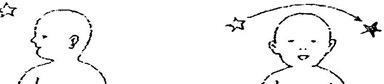
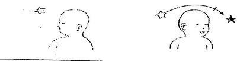
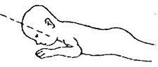
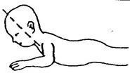
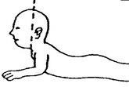

Kuesioner Praskrining untuk Bayi 3 bulan
- Pada waktu bayi telentang, apakah masing-masing lengan dan tungkai bergerak dengan mudah? Jawab TIDAK bila salah satu atau kedua tungkai atau lengan bayi bergerak tak terarah/tak terkendali.
- Pada waktu bayi telentang apakah ia melihat clan menatap wajah anda?
- Apakah bayi dapat mengeluarkan suara-suara lain (ngoceh), disamping menangis?
- Pada waktu bayi telentang, apakah ia dapat mengikuti gerakan anda dengan menggerakkan kepalanya dari kanan/kiri ke tengah?

- Pada waktu bayi telentang, apakah. ia dapat mengikuti gerakan anda dengan menggerakkan kepalanya dari satu sisi hampir sampai pada sisi yang lain?

- Pada waktu anda mengajak bayi berbicara dan tersenyum,apakah ia tersenyum kembali kepada anda?
- Pada waktu bayi telungkup di alas yang datar, apakah ia dapat mengangkat kepalanya seperti pada gambar ini?

- Pada waktu bayi telungkup di alas yang datar, apakah ia dapat mengangkat kepalanya sehingga membentuk sudut 45° seperti pada gambar ?

- Pada waktu bayi telungkup di alas yang datar, apakah ia dapat mengangkat kepalanya dengan tegak seperti pada gamb

- Apakah bayi suka tertawa keras walau tidak digelitik atau diraba-raba?